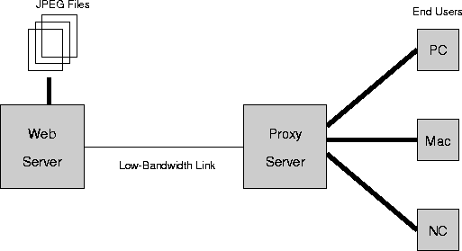
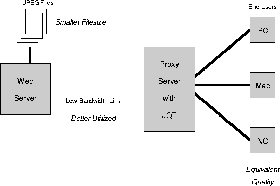

Network Architectures for JPEG Quality Transcoders
A JPEG Quality Transcoder (JQT) converts a JPEG image file that
was encoded with low image quality to a larger JPEG image file with
reduced visual artifacts, without access to the original uncompressed
image. JQTs can be added to standard networking architectures to
reduce bandwidth on constrained network links.
This figure shows a common Intranet topology :

- JPEG image files reside on a web server. These images were
compressed at an image quality appropriate for the application.
- These files are sent via a low-bandwidth
network link to a remote web proxy server machine.
- The proxy machine
serves a heretogeneous cluster of end-user machines via a
high-bandwidth local area network.
This figure adds a JPEG Quality Transcoder to the Intranet
topology :

- The JQT sits in the proxy server, and converts input JPEG files
with lower image quality to new JPEG files with higher image quality.
- With the JQT in the system, the filesize of the original JPEG
images on the webserver can be reduced, while maintaining the same
end-user image quality as in the original system. Using our current JQT
prototype, and a target image quality recommended in the JPEG
standard, we can achieve average filesize reductions of 11.5
percent.
- The JQT converts the smaller JPEG image file retrieved from the
web server into a larger file: in our prototype system, average
filesize is increased by a factor of 3.4. The high-bandwidth connection
between the web proxy server and end-user machines can easily absorb
this bandwidth increase.
- On an UltraSPARC II server, our prototype JQT processes
a 384 by 256 color image in under two seconds.
One use for the JQT, as described above, is to reduce the filesize of
images on the web server. Alternatively, if the image files remain
unaltered, the JQT acts to improve the image quality presented to end
users. Our current prototype JQT improves image quality by 31 percent,
as measured using a perceptual metric.
|